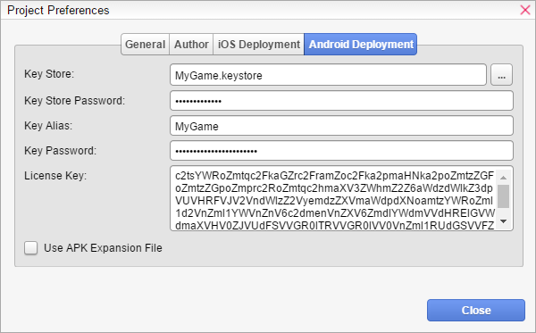

适用于 Android
Testing & Deployment for Android 需要一些准备步骤才能正常工作。本主题将引导你完成必要的步骤，并尽量让你一切尽可能轻松。如果你遇到困难或有任何问题，请查看我们的支持论坛。
要求
要测试和/或将你的游戏部署到 Android，你必须满足以下要求：
如果你计划将你的游戏提交到 Google Play 商店（这是可选的），你必须执行以下步骤：
我们也建议查看 Cordova 的 Android 平台指南，你可以在此处找到：
https://cordova.apache.org/docs/en/latest/guide/platforms/android/
让我们一步一步地进行上述步骤。
安装 JDK（Java 开发工具包）
你需要安装 JDK（Java 开发工具包）。你可以从这里下载：
http://www.oracle.com/technetwork/java/javase/downloads/jdk8-downloads-2133151.html
安装 Android Studio + SDK
你需要 Android SDK 来构建和部署你的 Android 游戏。你只需安装 Android SDK Tools 或安装包含 SDK 的完整 Android Studio。你可以从这里获取：
https://developer.android.com/studio/index.html#downloads
安装 Node.js
你需要 Node.js 来运行 Cordova，Cordova 是正确打包你的 Android 部署游戏所必需的。你可以从以下网址下载 Node.js：http://nodejs.org
安装 Cordova
你需要 Cordova 来正确打包你的 Android 部署游戏。 要安装 Cordova，只需打开一个终端/命令行窗口。
打开终端后，你会看到一个黑色窗口（在大多数情况下），其中有一个闪烁的光标，你可以在其中输入一些文本（命令）。 只需键入以下命令：
npm install -g cordova
然后按回车键。 之后，终端窗口将显示大量文本。 只需等待所有操作完成。 然后键入：
cordova --version
然后按回车键。 如果你看到 cordova 的版本号，则安装成功。 如果出现错误，则说明有些地方出错了。 在这种情况下，请查看终端窗口中的文本/消息，并在我们的论坛中寻求帮助。
注册 Google Play 商店（可选）
此步骤是可选的，如果你只想测试你的应用或不打算通过 Google Play 商店发布你的游戏，则可以跳过。 只需访问：
https://play.google.com/apps/publish/signup
进行注册，并按照该网站上的指南了解有关如何提交你的游戏的更多信息。 在撰写本文时，每年将花费你 25 美元。
准备你的 VN Maker 项目以进行 Android 部署
既然一切都已设置好，你就可以开始为 Android 构建你的游戏了！ 确保你的项目在 Database > System 中有一个游戏标题。
音频和视频资源
在撰写本文时，通过 Cordova 打包的 Android 游戏可能在 .m4a/.mp4/.mp3/.aac 音频和 .mp4 视频格式方面存在问题。 为安全起见，你应该为音频使用 .ogg 和 .wav，为视频使用 .webm。 确保将所有音频和视频文件转换为必要的格式。 VN Maker 允许你多次导入同一个文件，但使用不同的格式，然后在运行时自动选择正确的格式，这对于 HTML5 网页浏览器游戏很有用。 但是，如果你计划离线通过 Play 商店发布你的游戏，或者仅作为 APK 下载，则应删除任何未使用的文件以减小文件大小。
项目偏好设置（签名和 Play 商店）
如果你只想在 Android 上内部测试你的应用程序，则可以跳过以下步骤。 否则，你需要打开项目偏好设置并导航到 Android 部署选项卡。

（显示的 data 并非真实 data，仅为提供示例说明你需要输入什么样的数据）。
你需要指定你的密钥库信息才能正确签名 APK。 否则，它将使用开发证书签名。 如果你不想将 APK 提交到 Play 商店，则可以忽略License Key和Use APK Expansion File。 另外，请确保在General选项卡中输入一个唯一的Game ID。输入所有必需的信息后，单击“关闭”按钮并保存你的项目。
在 Android 上进行测试
如果你想在 Android 上进行快速试玩，只需将设备连接到你的计算机，并确保它保持解锁/激活状态。 确保在设备上启用了开发者模式。 检查 Android 设备上的“设置”应用程序以启用开发者模式和执行未签名 APK。
然后从菜单栏选择“构建为 > Android (Cordova)”来构建你的 Android 游戏。 构建过程将需要几分钟时间。 构建过程完成后，通过“工具 > 调试控制台”打开调试控制台，并检查任何错误。
如果你想手动安装，可以在项目的 build-folder 中找到
.apk文件：<project-folder>/build/<project-name>/<project-name>/platforms/android/build/outputs/apk/<project-name>.apk
现在，你可以通过从菜单栏选择“在...上播放 > Android (Cordova)”来在已连接的设备上播放你的游戏。 你的游戏构建将被传输并安装到已连接的设备上，这可能需要几分钟时间，然后会自动启动。 检查调试控制台以获取任何错误。 如果你的游戏没有自动启动，你必须手动启动它。
部署到 Android
默认情况下，VN Maker 支持导出单个 APK 以供自发布或其他商店使用，也支持导出供 Play 商店使用。
部署用于自发布的 APK
你可以使用
创建游戏包
向导来部署你的 Android 游戏。 只需从平台列表中选择“Android (Cordova)”即可。 打开调试控制台以检查错误。 包创建可能需要一段时间。 你可以在以下位置找到 .apk 文件：<output-location>/<project-name>/<project-name>/platforms/android/build/outputs/apk/<project-name>.apk部署用于 Play 商店的 APK
你可以使用
创建游戏包
向导来部署你的 Android Play 商店游戏。 只需从平台列表中选择“Android (Cordova, Play Store)”。 确保你在项目偏好设置的 Android 部署选项卡中输入了所有必要的信息。 打开调试控制台以检查错误。 包创建可能需要一段时间。 你可以在以下位置找到 .apk 文件：<output-location>/<project-name>/<project-name>/platforms/android/build/outputs/apk/<project-name>.apk有关如何将你的应用程序提交到 Play 商店的更多信息，请遵循 Google Play 商店网站上的指南。
故障排除
如果你没有遇到任何错误地完成了以上所有步骤，那么恭喜你！ 但这并不是常规情况，尤其不是你第一次这样做的时候。 因此，如果你遇到困难或收到任何错误消息，请不要担心，因为它们通常与错误的配置有关，并且可以轻松解决。
你应该尝试做的第一件事是通过检查错误日志来弄清楚错误消息。 有时错误消息即使对非程序员来说也是可以理解的。 常见错误包括：
你的设备未连接或处于锁定屏幕状态
你的设备已连接，但你的计算机无法访问它。
适用于 iOS